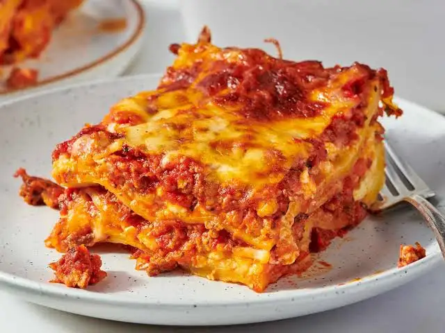

Home
Classic Lasagna

Description
This classic lasagna layers tender pasta sheets with a rich, slow-simmered meat sauce, creamy ricotta, and melted mozzarella cheese.
It bakes until golden and bubbling, making it an ideal make-ahead meal for family dinners.
Ingredients
- 12 lasagna noodles
- 500g ground beef
- 1 jar (700g) marinara sauce
- 400g ricotta cheese
- 2 cups shredded mozzarella cheese
- 1/2 cup grated Parmesan cheese
- 1 egg
- Salt and black pepper to taste
Steps
- Preheat your oven to 190°C (375°F) and boil the lasagna noodles according to package directions.
- Brown the ground beef in a skillet over medium heat, drain excess fat, and stir in the marinara sauce.
- In a bowl, mix the ricotta cheese, egg, Parmesan, salt, and pepper until smooth.
- Spread a thin layer of meat sauce on the bottom of a baking dish, then layer noodles, ricotta mixture, mozzarella, and sauce.
- Repeat the layers twice, finishing with a generous layer of mozzarella on top.
- Cover with foil and bake for 25 minutes, then uncover and bake for another 15 minutes until bubbly and golden.